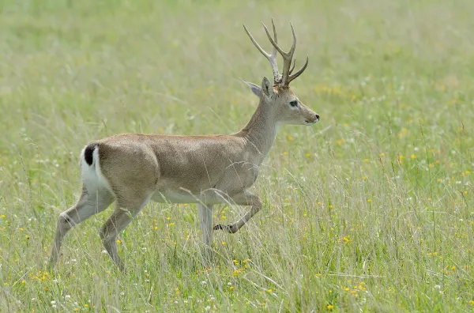
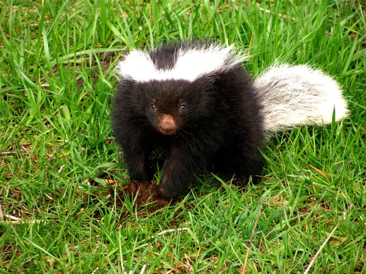

SOBRE A PAMPA
O Pampa é um bioma situado no centro-sul do continente americano e possui um clima tipicamente subtropical. Tem como características geográficas o relevo suave ondulado, as precipitações constantes e a vegetação de gramíneas. No Brasil, o Pampa cobre parte significativa do estado do Rio Grande do Sul.
CLIMA
É o subtropical, marcado pela ocorrência de temperaturas amenas na maior parte do ano e pela frequência constante de chuvas. Esse bioma também ocorre em zonas de clima temperado do continente sul-americano.
FAUNA & FLORA
É bastante diversa, composta por diversas espécies de aves, roedores e pequenos mamíferos. São animais encontrados no Pampa: o veado-campeiro, o furão, a ema e o perdigão. O bioma possui ainda algumas espécies endêmicas, como o beija-flor-de-barba-azul e o sapinho-de-barriga-vermelha.
É bastante homogênea, sendo composta especificamente por espécies vegetais de gramíneas e herbáceas, com altura mediana e estrutura vegetacional uniforme. Nesse bioma, ocorre de forma bastante pontual espécies de maior altura, como algumas árvores e arbustos.
 